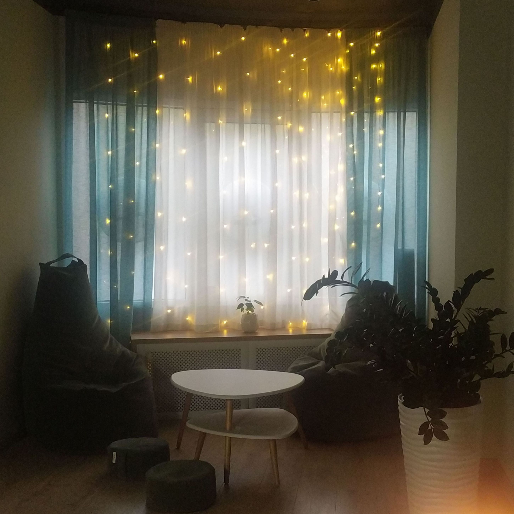
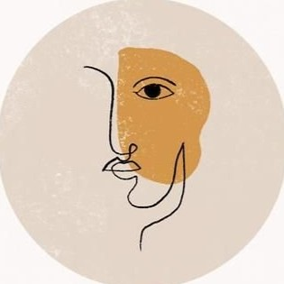

Breathe in. Breathe out.
Align with Yoga's Heart.
Sign in for your first lesson!
Breathe in. Breathe out.
Align with Yoga's Heart.

Hatha yogaHatha comes from two Sanskrit words, ‘Ha’ meaning ‘sun’ and ‘tha’ meaning ‘moon’. This signifies the attempt to unify or balance opposites. Hatha can also mean ‘effort’, suggesting transformation through exercise of the physical body. |
Raja Yoga“Raja” comes from the Sanskrit word for “royal”. The ethos behind Raja yoga is that it is our mind that creates our reality. Whatever we experience in life, pain or pleasure, it is created by our own mind. If our mind isn’t focused then we will be thrown at every turn. |
Bhakti Yoga‘Bhakti’ comes from the Sanskrit word ‘bjah’ which means to ‘adore and worship God’. Bhakti yoga is considered one of the easiest forms of yoga to master. It requires selfless love and devotion to a higher being. When we give love, we receive it. |
Jnana YogaJnana yoga leads us down the path to wisdom and self realisation. It helps us to discern the difference between what is genuine and what is not. |
Tantra YogaThe definition of Tantra yoga is ‘where opposites meet and become one’. Tantra yoga teaches that there is no difference between opposites such as the Divine and the divinity of ordinary life. |

Mantra YogaMantra means ‘mind projection’ and refers to sound. It is used through chanting or reciting as a means to quiet the mind and block out all thoughts. |
Alyona Pudova "I never cease to wonder how versatile yoga is. How many tasks can a modern person solve with its help. Anyone who has tried to practice regularly stays with yoga forever, because the result is not long in coming. I am often asked how I came to yoga... I think this is my destiny. It gives me great satisfaction to help people through the practice of yoga to become healthier, happier, peaceful. Friends, do yoga, look for a teacher who is close in spirit, and you will discover the amazing possibilities of your body and mind!" |
Elena Barteneva "First of all, yoga for me is the ability to listen to my body and the phrase "do no harm" both in relation to myself and my students. I have no goal to tie you to joint classes with me. In my classes, I give information so that you can then practice on your own. Practicing with me according to the BCS method. Iyengar, Yin Yoga and Relaxation You will learn to relax your mind, distract from your thoughts and hear what your body asks. I can also help you get on the Sadhu board. The solstice, in turn, helps to strengthen the immune system, relieve nervous tension and develop fortitude. And it's also a great psychological practice of achieving goals." |
Alyona Menshikova "I came to yoga 6 years ago. I got carried away and delved into asanas and pranayamas, because my Teacher turned out to be on my way. I began to study the theory of "yoga": every step of it, yams/neyams, asanas and pranayamas. I completed Spiritual Practice with Sudam Ji and Savitri Ji Rathore. I have quite a lot of training in my arsenal, but I still continue this path - because each of you gives a new round to knowledge and improvement." |
|---|
|
$12 60 minutes |
$17 90 minutes |

beginner's path - $30 4 lessons/60 minutes |
$80 8 lessons/60 minutes |
$100 8 lessons/90 minutes |
|---|
We have created for you a cozy atmospheric space where you can:
༄ Plunge into the wonderful world of ancient yoga practice;
༄ Feel how stress and depression recede;
༄ Observe how the body becomes strong and fit, and the mind is calm;
༄ Find like-minded people, friends and just interesting people;
༄ Enjoy delicious tea or freshly brewed coffee after practice.
Open your heart to yoga with us!
✩°｡⋆⸜ What clothing should I wear?
Any comfortable clothing that suits you: T-shirt, top, leggings, but no socks.
✩°｡⋆⸜ What should I take with me?
Absolutely nothing. We have everything in our studio.
✩°｡⋆⸜ Maybe I have contraindications. How do I know for sure?
Only the instructor can answer this question. Come to the session and check
with them.
✩°｡⋆⸜ When will the first results of classes be noticeable?
The body reacts quickly enough to an increase in loads, so after 8 to 12 sessions,
you can already notice a decrease in muscle pain, normalization of tonus and improved
coordination of movements.
✩°｡⋆⸜ How many times a week do you need to do yoga to feel your best?
It's individual for everyone. The most important thing is that you want to practice
yoga and feel energized after classes.
Usually, for most people it's enough to have classes 2-3 times a week.
Phone number: +1 234 567 89 01
Address: 1385 Woodroffe Ave, Nepean